This project for the Region of Waterloo was done in a team of seven second year UX students. We collaborated through bi-weekly meetings as well as discussing in a group chat. During the bi-weekly meeting, we divided up tasks for that week, as well as examining next steps. The timeline for this project was seven weeks.
Problem Statement
The Region of Waterloo has been working over the past few years to increase the number of services available online. Their goals was to eliminate as many PDF forms as possible by transforming those into well designed online services. The vision of the Region was to improve the digital service journey. In the end we created a problem reporting tool.
We created the following how might we statement based on the information given:
How might we allow the residents of Waterloo to be able to report a problem they experienced with the region and stay informed on the status of their inquiries.
For this project, followed the four steps, inspiration, ideation, iteration and implementation.
Inspiration
We got inspiration through the data provided by the Region of Waterloo as well as conducting a competitive analysis and user research. Many different aspects of the data was looked at, including but not limited to, the bounce rate off the website, where the bounces were happening and the number of calls the call centre received per month. After gathering data from what was provided to us, we also ran a test of the current website with a small group of people to analyze the functionality of the website. Other region sites were also looked at to further generate inspiration.
We analyzed user’s clicks to gain a better understanding of user behaviour. We found that the bounce rate on ‘report a problem’ sections of the website were very high. We also found that a lot of people went on the home page and then left without clicking around. This data caught our attention and provided us with insight and a guideline of where the focus of the project should be.
We took a look at websites from other regions to get a better sense of what features worked well and what features did not. While looking at different sites, a See-Click-Fix tool from Burlington’s website, and a Report a Problem tool from Oakville’s website caught our attention. We felt that having an online tool to report a problem would be useful and could be a potential solution to the challenge presented to us. Other features that we liked included having a picture behind headings, one focus per page, and quick add feature. Problems found in websites included information overload and having unnecessary information.
Each member of the team, also conducted a test of the current website with two users. Testers were given a specific address and asked to find the garbage schedule for that address. It was found that few people had an issue finding information. Many users began the task by searching “Region of Waterloo garbage collection schedule” into google and were able to find the garbage schedule soon after. From this task, we concluded that it is not difficult for users to find information on the website. We also called the call center to gain a better understanding of the process users go through when making a call. It was found that the wait time during peak-hours such as around 4pm were long while the wait times in the morning were fairly shorter. Overall, the staff was informative and friendly.
Ideation
Once inspiration was drawn, the ideation stage began. At this stage, we narrowed our focus to reporting a problem and began to generate ideas for the solution. We started brainstorming and sketching out wireframes to further prototype. Skewtches were made to generate ideas for what features we wanted in the final solution. After ideas were created, we moved on to creating a storyboard to map out the user experience through this reporting tool. We combine the storyboard into our the low fidelity prototype.
Sketches
Taking about 10 minutes, we each individually sketched ideas for the prototype to brainstorm ideas. After sketching, we placed all the sketches on one table. We then voted on the design that incorporated our ideas the best and discussed what features made the winning sketches more appealing. After a long discussion, we decided that a map, tracking number, pictures, optional login, and an emotive submitted page will be included and tested to be determined if it will be in the final solution.
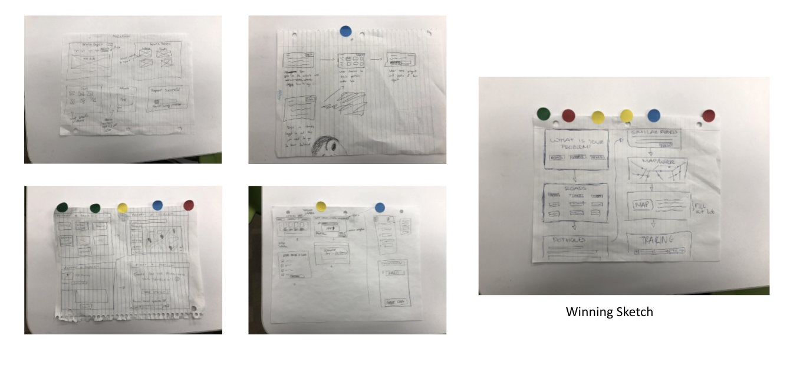
Storyboard/Low Fidelity Prototype
After brainstorming ideas from the heat map, a low fidelity prototype was created on the whiteboard. The prototype was then transferred to Google Slides. We combined the methodology of storyboarding into our low fidelity prototype as we felt that having a scenario for our prototype would help us keep in mind the user. We decided on the opening scene of hitting a pothole, and then created the wireframes of the prototype based off the sketches done in the heat map.
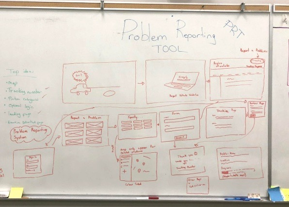
↓
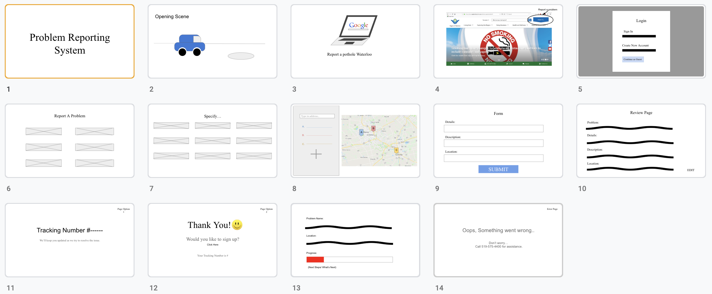
Iteration
The goal of this stage was to improve our solution according to user tests. First, we conducted a card sort and tree test to refine our terms and categories. Later on, we also conducted a focus group to test our high fidelity prototype. The feedback received allowed us to refine our prototype.
Card Sorting/Tree Testing
In the card sort, participants were given topics and categories. They were tasked to sort the topics into categories. Through this task, we found a few ambiguous terms such as ‘staff member’ “hydro’ and ‘landfill’. After the card sort, we placed the sub-categories into categories and tested the categories in a tree test. In this test, we found that the location of the category ‘graffiti’ should be moved.
High Fidelity Prototype
Adobe XD was used to create a high fidelity interactive prototype of our “Report a Problem Tool”. This was created based off our low fidelity prototype, with slight alterations based on the findings of our card sort and tree tests.
Screenshots of Prototype:
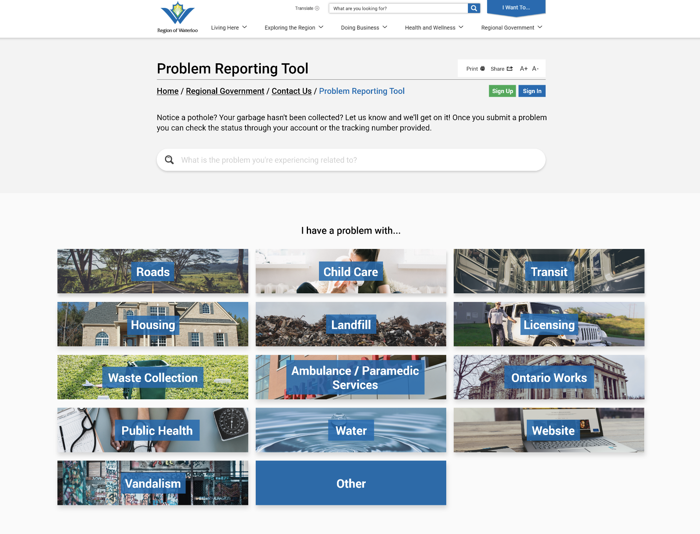
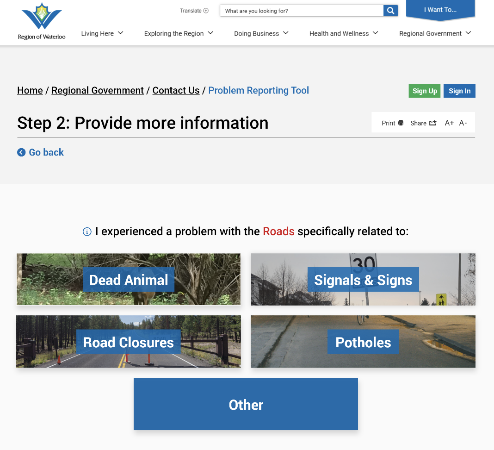
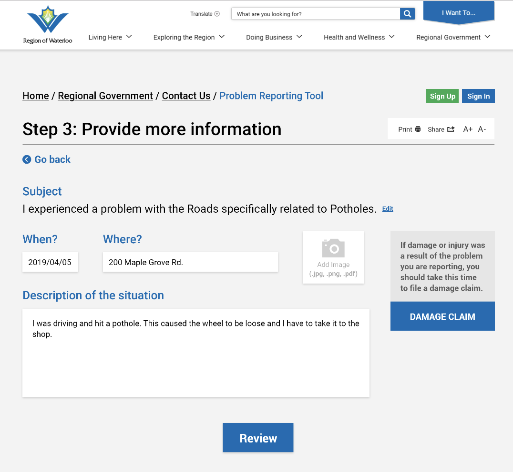
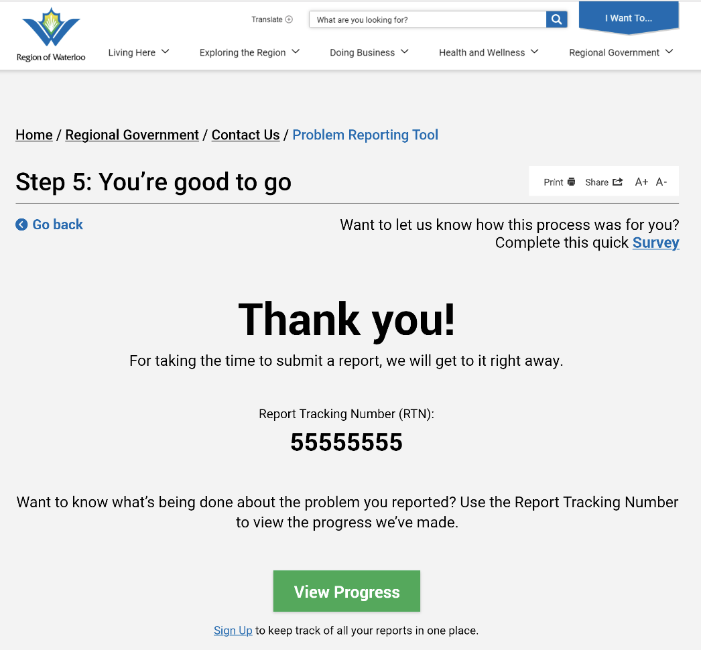
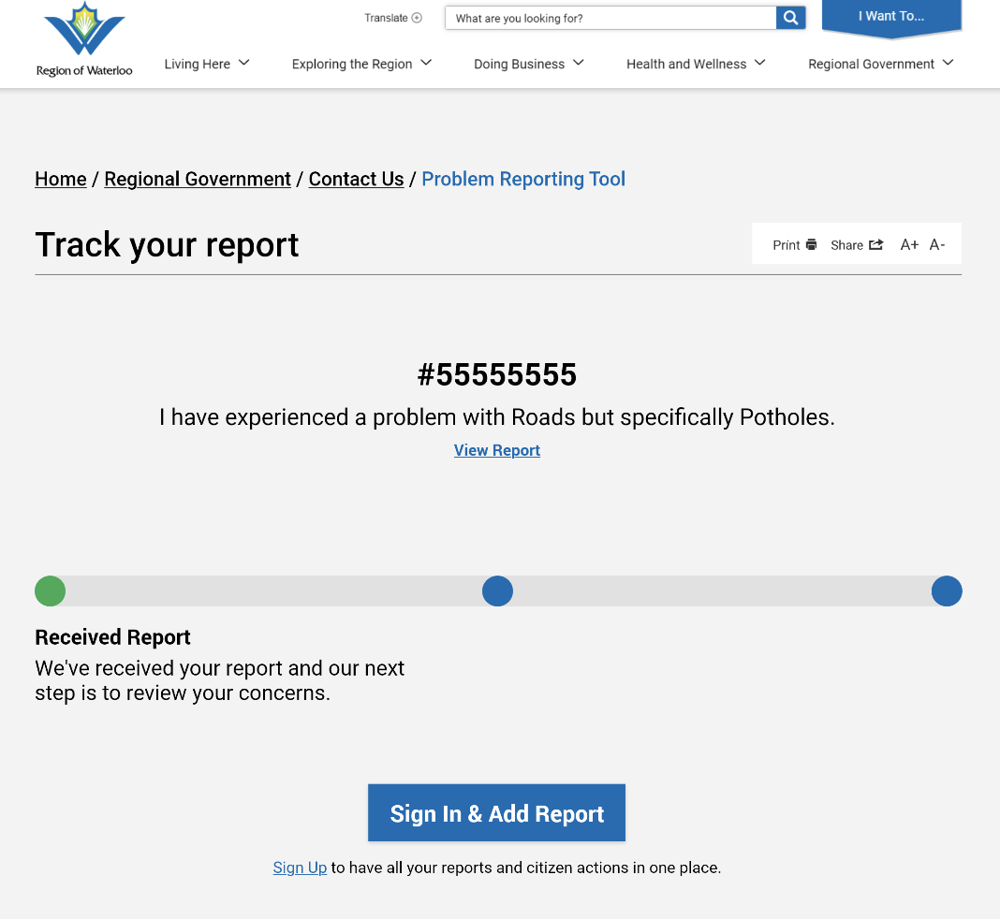
Focus Group Testing
The Adobe XD prototype was tested during two focus groups set up with the Region of Waterloo. Six participants were asked to complete 3 sample tasks we had outlined for them; we encouraged participants to use a ‘think out loud protocol’ (to speak their thoughts while testing out the prototype).
Detailed feedback was given from the focus group testing. These feedback points include:
The search bar function was not often used
The ambulance/paramedic subcategories of “The care I received” and “The way I was treated” are similar and often confused
File size/type specifications for document/picture upload should be added
Information/help button for how to fill out the form correctly or what’s expected of certain fields should be added
Map feature perceived well
Location services for users who want to see where they are on the map should be added
Add buildings/institution names as locations landmarks
Request vs. report was confusing
The different tabs to the left of the map are confusing/misunderstood
The differences between having an account and not having one are not clear
Add where exactly the claim is going (i.e claims department)
Add an approximate time frame for when their issue will be resolved
Feedback survey of ‘how we did’ after issue is resolved
Implementation
Lastly, after completing all the changes, the problem reporting tool is finally ready to be implemented. A final prototype was created with all the adjusted changes that were suggested. The tool is now ready to be coded in full and embedded into the Region of Waterloo website under the ‘I want to’ bar.
 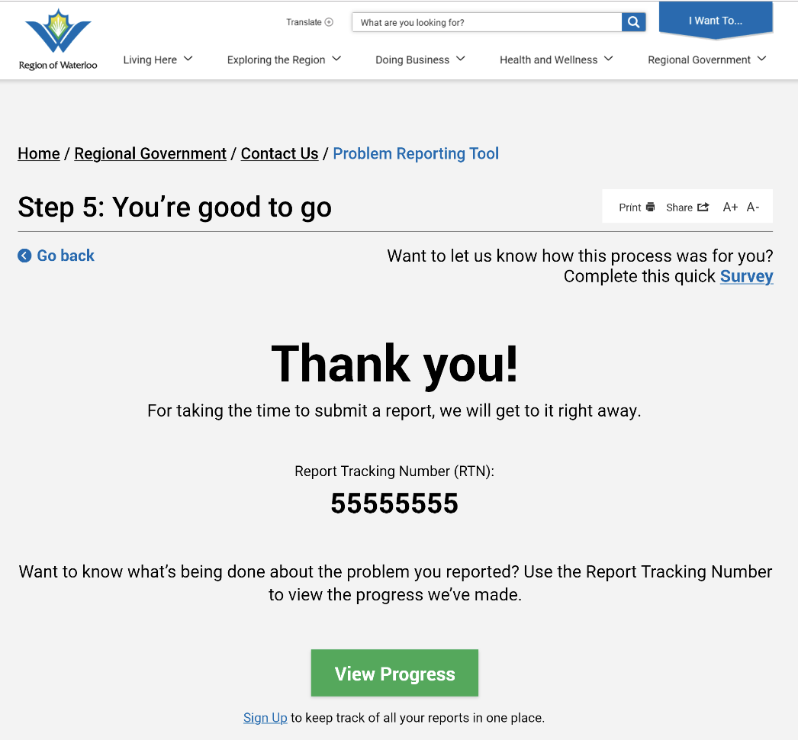
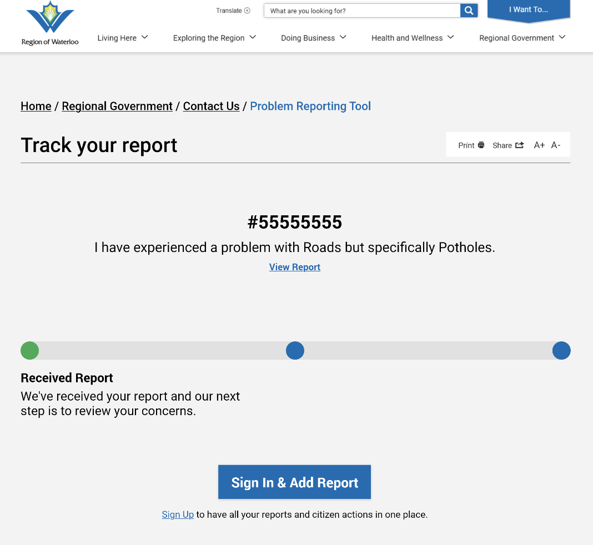
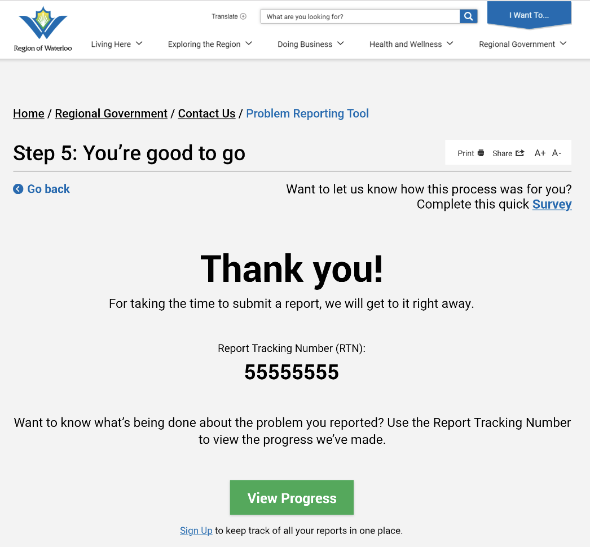
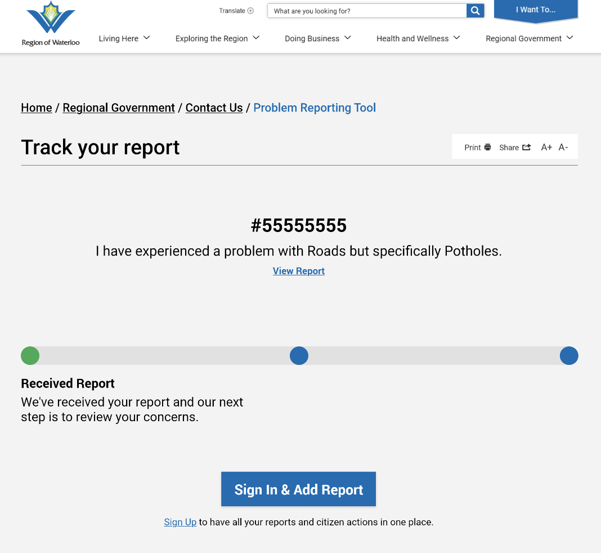